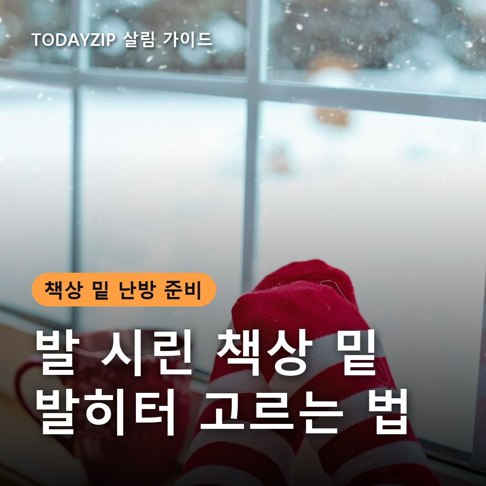
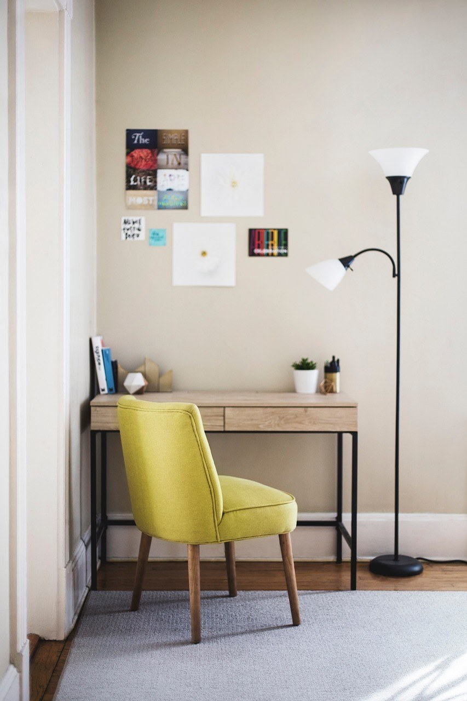

이 포스팅은 쿠팡 파트너스 활동의 일환으로, 이에 따른 일정액의 수수료를 제공받습니다.
[사진 1: 썸네일]
히터를 켜도 손은 따뜻한데 발끝만 계속 시린 적 있나요? 따뜻한 공기는 위로 올라가서 책상 아래는 오래 차가운 경우가 많아요. 그래서 겨울이 되면 사무실이나 재택 책상 밑에 둘 작은 난방기를 찾게 돼요.
사무실 발히터는 모양이 비슷해 보여도 데우는 방식과 소비전력이 꽤 달라요. 오늘은 패널형·발판형·온풍형의 차이, 소비전력으로 전기 사용량을 계산하는 법, 사기 전에 볼 안전 기능을 순서대로 정리해 드릴게요.
[사진 2]
📷 [직접 찍은 사진 넣기: 책상 아래 공간을 줄자로 재는 모습(가로·깊이·높이)]
따뜻한 공기는 위로 모이고 바닥 쪽은 찬 기운이 남기 쉬워요. 큰 히터로 방 전체를 데우면 전기를 많이 써요.
발히터는 내 발과 종아리 주변만 데우는 용도예요. 그래서 공간 전체가 아니라 책상 아래 크기와 앉는 시간에 맞춰 고르는 게 핵심이에요.
✍️ [내 경험 한두 줄: 겨울에 책상 앞에 앉아 있으면 어디가 제일 먼저 시린가요? (발끝/종아리/무릎)]
사무실 발히터는 크게 세 가지로 나눠 볼 수 있어요. 아래는 일반적인 특징이라 같은 방식이라도 제품마다 소비전력과 크기가 달라요.
| 구분 | 패널형(접이식) | 발판형(매트) | 온풍형(미니 팬히터) |
|---|---|---|---|
| 데우는 방식 | 책상 아래를 판으로 둘러 복사열 | 발을 올려 바닥에서 직접 | 바람으로 따뜻한 공기 |
| 따뜻해지는 범위 | 발·종아리 | 발바닥 중심 | 발 주변, 바람 닿는 곳 |
| 소리 | 거의 없음 | 거의 없음 | 팬 소리 있음 |
| 공간 | 책상 아래 폭이 필요 | 얇아서 자리 적게 차지 | 작지만 앞쪽 거리 필요 |
| 주의점 | 표면 온도·담요 덮지 않기 | 같은 자리 오래 대지 않기 | 옷·종이와 거리 두기 |
[사진 3]
📷 [직접 찍은 사진 넣기: 멀티탭 뒷면이나 옆면의 정격 용량 표시(W 또는 A)]
전기 사용량은 소비전력(kW) × 켠 시간으로 구해요. 예를 들어 300W 제품을 하루 4시간, 30일 쓰면 0.3 × 4 × 30 = 36kWh예요. 실제 요금은 우리 집이나 사무실의 요금제와 누진 구간에 따라 달라져요.
그래서 '절전형'이라는 이름보다 상세페이지와 제품 라벨에 적힌 W 숫자를 먼저 보세요. 발밑만 데우는 용도라면 소비전력이 낮은 제품부터 살펴보는 게 좋아요.
사무실이라면 주변에 불편을 주지 않는지도 중요해요.
[사진 4]
조용한 사무실에서 하루 종일 앉아 있다면 소리가 없는 패널형이 잘 맞아요. 책상 아래 공간이 좁거나 자리를 자주 옮긴다면 얇은 발판형이 편해요.
발끝만이 아니라 다리 전체가 시리고 빨리 따뜻해지는 게 중요하다면 온풍형도 볼 수 있어요. 다만 바람이 옆 사람에게 가지 않게 방향을 정하고, 종이·가방과 거리를 두세요.
✍️ [내 경험 한두 줄: 책상 앞에 주로 몇 시간쯤 앉아 있나요? (사무실/재택)]
Q. 사무실 발히터는 하루 종일 켜 둬도 되나요?
A. 제품 설명서의 연속 사용 기준을 따르세요. 타이머를 맞춰 두고 자리를 비울 때는 끄는 게 안전하고 전기 사용도 줄어요.
Q. 패널형과 발판형 중 뭐가 더 따뜻한가요?
A. 패널형은 책상 아래를 둘러 종아리까지, 발판형은 발바닥 중심으로 데워요. 시린 부위에 맞춰 고르세요.
Q. 멀티탭에 꽂아 써도 되나요?
A. 멀티탭 정격 용량 안에서 쓰고, 가능하면 벽 콘센트에 바로 꽂는 게 좋아요.
정리하면, 조용한 사무실이면 패널형, 좁은 책상이면 발판형, 빨리 데워야 하면 전도 안전 기능이 있는 온풍형을 보세요. 어떤 방식이든 라벨의 소비전력과 타이머·과열 방지 기능이 먼저예요.
여러분은 겨울에 책상 밑 추위를 어떻게 버티시나요? 좋은 방법이 있다면 댓글로 나눠 주세요.
인스타그램 @todayzip.info 에서 살림 꿀팁을 30초 영상으로도 볼 수 있어요.
이 포스팅은 쿠팡 파트너스 활동의 일환으로, 이에 따른 일정액의 수수료를 제공받습니다.